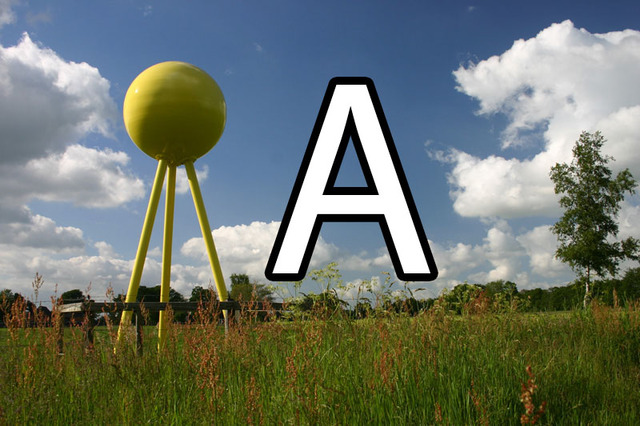

<fieldset data-role="controlgroup">
    <legend id="plpAbiA01">Welchen Durchmesser hat die Sonnenkugel auf dem Lehr-Pfad?</legend>
    <label for="plpAbiA01a">
        <input name="plpAbiA01" id="plpAbiA01a" value="falsch" type="radio">
        13 cm
    </label>
    <label for="plpAbiA01b">
        <input name="plpAbiA01" id="plpAbiA01b" value="richtig" type="radio">
        139 cm
    </label>
    <label for="plpAbiA01c">
        <input name="plpAbiA01" id="plpAbiA01c" value="falsch" type="radio">
        13 mm
    </label>
</fieldset>
<fieldset data-role="controlgroup">
    <legend id="plpAbiA02">Woraus besteht die Sonnenkugel unseres Lehrpfades?</legend>
    <label for="plpAbiA02a">
        <input name="plpAbiA02" id="plpAbiA02a" value="falsch" type="radio">
        Betonkugel
    </label>
    <label for="plpAbiA02b">
        <input name="plpAbiA02" id="plpAbiA02b" value="richtig" type="radio">
        Raketentreibstofftank
    </label>
    <label for="plpAbiA02c">
        <input name="plpAbiA02" id="plpAbiA02c" value="falsch" type="radio">
        Faußball
    </label>
</fieldset>
<fieldset data-role="controlgroup">
    <legend id="plpAbiA03">Die Sonne ist 400 mal so groß wie unser Mond. Wieviel mal weiter entfernt ist sie von der Erde als der Mond ?</legend>
    <label for="plpAbiA03a">
        <input name="plpAbiA03" id="plpAbiA03a" value="falsch" type="radio">
        4 mal
    </label>
    <label for="plpAbiA03b">
        <input name="plpAbiA03" id="plpAbiA03b" value="falsch" type="radio">
        40 mal
    </label>
    <label for="plpAbiA03c">
        <input name="plpAbiA03" id="plpAbiA03c" value="richtig" type="radio">
        400 mal
    </label>
</fieldset>
<fieldset data-role="controlgroup">
    <legend id="plpAbiA04">Wie weit ist unsere Modellerde von der Modellsonne entfernt ?</legend>
    <label for="plpAbiA04a">
        <input name="plpAbiA04" id="plpAbiA04a" value="falsch" type="radio">
        59 Meter
    </label>
    <label for="plpAbiA04b">
        <input name="plpAbiA04" id="plpAbiA04b" value="richtig" type="radio">
        150 Meter
    </label>
    <label for="plpAbiA04c">
        <input name="plpAbiA04" id="plpAbiA04c" value="falsch" type="radio">
        6 Kilometer
    </label>
</fieldset>
<fieldset data-role="controlgroup">
    <legend id="plpAbiA05">Wie heißt der Stern, der die Erde mit Licht und Wärme versorgt?</legend>
    <label for="plpAbiA05a">
        <input name="plpAbiA05" id="plpAbiA05a" value="falsch" type="radio">
        Mond
    </label>
    <label for="plpAbiA05b">
        <input name="plpAbiA05" id="plpAbiA05b" value="richtig" type="radio">
        Sonne
    </label>
    <label for="plpAbiA05c">
        <input name="plpAbiA05" id="plpAbiA05c" value="falsch" type="radio">
        Sirius
    </label>
</fieldset>
<fieldset data-role="controlgroup">
    <legend id="plpAbiA06">Wie lange wird es unsere Sonne wie jetzt höchstens noch geben?</legend>
    <label for="plpAbiA06a">
        <input name="plpAbiA06" id="plpAbiA06a" value="falsch" type="radio">
        Ewig
    </label>
    <label for="plpAbiA06b">
        <input name="plpAbiA06" id="plpAbiA06b" value="richtig" type="radio">
        4 1/2 Mrd. Jahre
    </label>
    <label for="plpAbiA06c">
        <input name="plpAbiA06" id="plpAbiA06c" value="falsch" type="radio">
        10 Mrd. Jahre
    </label>
</fieldset>
<fieldset data-role="controlgroup">
    <legend id="plpAbiA07">Wie oft passt unsere Erde insgesamt in die Sonne hinein?</legend>
    <label for="plpAbiA07a">
        <input name="plpAbiA07" id="plpAbiA07a" value="falsch" type="radio">
        109 mal
    </label>
    <label for="plpAbiA07b">
        <input name="plpAbiA07" id="plpAbiA07b" value="richtig" type="radio">
        1,3 Mio. mal
    </label>
    <label for="plpAbiA07c">
        <input name="plpAbiA07" id="plpAbiA07c" value="falsch" type="radio">
        10 mal
    </label>
</fieldset>
<fieldset data-role="controlgroup">
    <legend id="plpAbiA08">Wir wissen, dass die Erde eine Kugel ist. Was glaubten die Menschen im Mittelalter über das Aussehen der Erde?</legend>
    <label for="plpAbiA08a">
        <input name="plpAbiA08" id="plpAbiA08a" value="falsch" type="radio">
        Quadrat
    </label>
    <label for="plpAbiA08b">
        <input name="plpAbiA08" id="plpAbiA08b" value="falsch" type="radio">
        Ei
    </label>
    <label for="plpAbiA08c">
        <input name="plpAbiA08" id="plpAbiA08c" value="richtig" type="radio">
        Scheibe
    </label>
</fieldset>
<fieldset data-role="controlgroup">
    <legend id="plpAbiA09">Was ist der Mittelpunkt unseres Sonnensystems? (Auf dem Lehr-Pfad ist es Anfangs- bzw. Endpunkt)</legend>
    <label for="plpAbiA09a">
        <input name="plpAbiA09" id="plpAbiA09a" value="falsch" type="radio">
        Erde
    </label>
    <label for="plpAbiA09b">
        <input name="plpAbiA09" id="plpAbiA09b" value="richtig" type="radio">
        Sonne
    </label>
    <label for="plpAbiA09c">
        <input name="plpAbiA09" id="plpAbiA09c" value="falsch" type="radio">
        Mond
    </label>
</fieldset>
<fieldset data-role="controlgroup">
    <legend id="plpAbiA10">Wie heiß ist es im Kern der Sonne?</legend>
    <label for="plpAbiA10a">
        <input name="plpAbiA10" id="plpAbiA10a" value="falsch" type="radio">
        1000 °C
    </label>
    <label for="plpAbiA10b">
        <input name="plpAbiA10" id="plpAbiA10b" value="falsch" type="radio">
        100 °C
    </label>
    <label for="plpAbiA10c">
        <input name="plpAbiA10" id="plpAbiA10c" value="richtig" type="radio">
        15 Mio °C
    </label>
</fieldset>
<fieldset data-role="controlgroup">
    <legend id="plpAbiA11">Ein Eimer Wasser wiegt auf der Erde ca. 10 kg. Wie viel wiegt er auf dem Jupiter</legend>
    <label for="plpAbiA11a">
        <input name="plpAbiA11" id="plpAbiA11a" value="falsch" type="radio">
        3,9 kg
    </label>
    <label for="plpAbiA11b">
        <input name="plpAbiA11" id="plpAbiA11b" value="falsch" type="radio">
        8,9 kg
    </label>
    <label for="plpAbiA11c">
        <input name="plpAbiA11" id="plpAbiA11c" value="richtig" type="radio">
        25,6 kg
    </label>
</fieldset>
<fieldset data-role="controlgroup">
    <legend id="plpAbiA12">Welche Strecke legt die Modellerde des Lehr-Pfades an einem Tag zurück</legend>
    <label for="plpAbiA12a">
        <input name="plpAbiA12" id="plpAbiA12a" value="richtig" type="radio">
        2,6 m
    </label>
    <label for="plpAbiA12b">
        <input name="plpAbiA12" id="plpAbiA12b" value="falsch" type="radio">
        150 m
    </label>
    <label for="plpAbiA12c">
        <input name="plpAbiA12" id="plpAbiA12c" value="falsch" type="radio">
        38 cm
    </label>
</fieldset>
<fieldset data-role="controlgroup">
    <legend id="plpAbiA13">Wer strahlt den Mond in der Nacht an, so dass er aussieht, als hätte er eigenes Licht ?</legend>
    <label for="plpAbiA13a">
        <input name="plpAbiA13" id="plpAbiA13a" value="falsch" type="radio">
        Erde
    </label>
    <label for="plpAbiA13b">
        <input name="plpAbiA13" id="plpAbiA13b" value="richtig" type="radio">
        Sonne
    </label>
    <label for="plpAbiA13c">
        <input name="plpAbiA13" id="plpAbiA13c" value="falsch" type="radio">
        Jupiter
    </label>
</fieldset>
<fieldset data-role="controlgroup">
    <legend id="plpAbiA14">Welcher Planet ist der Sonne am nächsten ?</legend>
    <label for="plpAbiA14a">
        <input name="plpAbiA14" id="plpAbiA14a" value="falsch" type="radio">
        Mars
    </label>
    <label for="plpAbiA14b">
        <input name="plpAbiA14" id="plpAbiA14b" value="falsch" type="radio">
        Pluto
    </label>
    <label for="plpAbiA14c">
        <input name="plpAbiA14" id="plpAbiA14c" value="richtig" type="radio">
        Merkur
    </label>
</fieldset>
<fieldset data-role="controlgroup">
    <legend id="plpAbiA15">Welcher Planet hat am schnellsten die Sonne umrundet ?</legend>
    <label for="plpAbiA15a">
        <input name="plpAbiA15" id="plpAbiA15a" value="falsch" type="radio">
        Erde
    </label>
    <label for="plpAbiA15b">
        <input name="plpAbiA15" id="plpAbiA15b" value="falsch" type="radio">
        Pluto
    </label>
    <label for="plpAbiA15c">
        <input name="plpAbiA15" id="plpAbiA15c" value="richtig" type="radio">
        Merkur
    </label>
</fieldset>
<fieldset data-role="controlgroup">
    <legend id="plpAbiA16">Von welchem Planeten aus kann man auf dem Lehr-Pfad gerade noch die Sonne erkennen?</legend>
    <label for="plpAbiA16a">
        <input name="plpAbiA16" id="plpAbiA16a" value="falsch" type="radio">
        Jupiter
    </label>
    <label for="plpAbiA16b">
        <input name="plpAbiA16" id="plpAbiA16b" value="falsch" type="radio">
        Pluto
    </label>
    <label for="plpAbiA16c">
        <input name="plpAbiA16" id="plpAbiA16c" value="richtig" type="radio">
        Saturn
    </label>
</fieldset>
<fieldset data-role="controlgroup">
    <legend id="plpAbiA17">Welcher Planet hat ein von der Erde aus sichtbares Ringsystem ?</legend>
    <label for="plpAbiA17a">
        <input name="plpAbiA17" id="plpAbiA17a" value="richtig" type="radio">
        Saturn
    </label>
    <label for="plpAbiA17b">
        <input name="plpAbiA17" id="plpAbiA17b" value="falsch" type="radio">
        Pluto
    </label>
    <label for="plpAbiA17c">
        <input name="plpAbiA17" id="plpAbiA17c" value="falsch" type="radio">
        Jupiter
    </label>
</fieldset>
<fieldset data-role="controlgroup">
    <legend id="plpAbiA18">Zwischen welchen zwei Planeten befindet sich der Planetoidengürtel ?</legend>
    <label for="plpAbiA18a">
        <input name="plpAbiA18" id="plpAbiA18a" value="falsch" type="radio">
        Erde und Mars
    </label>
    <label for="plpAbiA18b">
        <input name="plpAbiA18" id="plpAbiA18b" value="falsch" type="radio">
        Uranus und Neptun
    </label>
    <label for="plpAbiA18c">
        <input name="plpAbiA18" id="plpAbiA18c" value="richtig" type="radio">
        Mars und Jupiter
    </label>
</fieldset>
<fieldset data-role="controlgroup">
    <legend id="plpAbiA19">Welcher Planet hat nicht nur einen Mond, sondern 62 ?</legend>
    <label for="plpAbiA19a">
        <input name="plpAbiA19" id="plpAbiA19a" value="richtig" type="radio">
        Saturn
    </label>
    <label for="plpAbiA19b">
        <input name="plpAbiA19" id="plpAbiA19b" value="falsch" type="radio">
        Jupiter
    </label>
    <label for="plpAbiA19c">
        <input name="plpAbiA19" id="plpAbiA19c" value="falsch" type="radio">
        Uranus
    </label>
</fieldset>
<fieldset data-role="controlgroup">
    <legend id="plpAbiA20">Welcher Planet haben nur einen Mond ?</legend>
    <label for="plpAbiA20a">
        <input name="plpAbiA20" id="plpAbiA20a" value="falsch" type="radio">
        Venus
    </label>
    <label for="plpAbiA20b">
        <input name="plpAbiA20" id="plpAbiA20b" value="richtig" type="radio">
        Erde
    </label>
    <label for="plpAbiA20c">
        <input name="plpAbiA20" id="plpAbiA20c" value="falsch" type="radio">
        Merkur
    </label>
</fieldset>
<fieldset data-role="controlgroup">
    <legend id="plpAbiA21">Welcher Planet habt keinen Mond ?</legend>
    <label for="plpAbiA21a">
        <input name="plpAbiA21" id="plpAbiA21a" value="falsch" type="radio">
        Mars
    </label>
    <label for="plpAbiA21b">
        <input name="plpAbiA21" id="plpAbiA21b" value="falsch" type="radio">
        Saturn
    </label>
    <label for="plpAbiA21c">
        <input name="plpAbiA21" id="plpAbiA21c" value="richtig" type="radio">
        Merkur
    </label>
</fieldset>
<fieldset data-role="controlgroup">
    <legend id="plpAbiA22">Welcher Planet hat die meisten Monde ?</legend>
    <label for="plpAbiA22a">
        <input name="plpAbiA22" id="plpAbiA22a" value="falsch" type="radio">
        Erde
    </label>
    <label for="plpAbiA22b">
        <input name="plpAbiA22" id="plpAbiA22b" value="richtig" type="radio">
        Jupiter
    </label>
    <label for="plpAbiA22c">
        <input name="plpAbiA22" id="plpAbiA22c" value="falsch" type="radio">
        Saturn
    </label>
</fieldset>
<fieldset data-role="controlgroup">
    <legend id="plpAbiA23">Welcher Planet ist fast gleich groß wie die Erde ?</legend>
    <label for="plpAbiA23a">
        <input name="plpAbiA23" id="plpAbiA23a" value="falsch" type="radio">
        Jupiter
    </label>
    <label for="plpAbiA23b">
        <input name="plpAbiA23" id="plpAbiA23b" value="falsch" type="radio">
        Pluto
    </label>
    <label for="plpAbiA23c">
        <input name="plpAbiA23" id="plpAbiA23c" value="richtig" type="radio">
        Venus
    </label>
</fieldset>
<fieldset data-role="controlgroup">
    <legend id="plpAbiA24">Welcher Planet braucht am längsten für eine Sonnenumrundung ?</legend>
    <label for="plpAbiA24a">
        <input name="plpAbiA24" id="plpAbiA24a" value="richtig" type="radio">
        Neptun
    </label>
    <label for="plpAbiA24b">
        <input name="plpAbiA24" id="plpAbiA24b" value="falsch" type="radio">
        Jupiter
    </label>
    <label for="plpAbiA24c">
        <input name="plpAbiA24" id="plpAbiA24c" value="falsch" type="radio">
        Merkur
    </label>
</fieldset>
<fieldset data-role="controlgroup">
    <legend id="plpAbiA25">Welches ist der größte Planet ?</legend>
    <label for="plpAbiA25a">
        <input name="plpAbiA25" id="plpAbiA25a" value="falsch" type="radio">
        Erde
    </label>
    <label for="plpAbiA25b">
        <input name="plpAbiA25" id="plpAbiA25b" value="falsch" type="radio">
        Saturn
    </label>
    <label for="plpAbiA25c">
        <input name="plpAbiA25" id="plpAbiA25c" value="richtig" type="radio">
        Jupiter
    </label>
</fieldset>
<fieldset data-role="controlgroup">
    <legend id="plpAbiA26">Welcher Planet ist am weitesten entfernt von der Sonne ?</legend>
    <label for="plpAbiA26a">
        <input name="plpAbiA26" id="plpAbiA26a" value="falsch" type="radio">
        Merkur
    </label>
    <label for="plpAbiA26b">
        <input name="plpAbiA26" id="plpAbiA26b" value="richtig" type="radio">
        Pluto
    </label>
    <label for="plpAbiA26c">
        <input name="plpAbiA26" id="plpAbiA26c" value="falsch" type="radio">
        Erde
    </label>
</fieldset>
<fieldset data-role="controlgroup">
    <legend id="plpAbiA27">Welcher Planet hat 2 Monde ?</legend>
    <label for="plpAbiA27a">
        <input name="plpAbiA27" id="plpAbiA27a" value="richtig" type="radio">
        Mars
    </label>
    <label for="plpAbiA27b">
        <input name="plpAbiA27" id="plpAbiA27b" value="falsch" type="radio">
        Neptun
    </label>
    <label for="plpAbiA27c">
        <input name="plpAbiA27" id="plpAbiA27c" value="falsch" type="radio">
        Uranus
    </label>
</fieldset>
<fieldset data-role="controlgroup">
    <legend id="plpAbiA28">Auf dem Planeten-Lehrpfad Hude-Wüsting ist Alles um wie viel mal verkleinert worden ?</legend>
    <label for="plpAbiA28a">
        <input name="plpAbiA28" id="plpAbiA28a" value="falsch" type="radio">
        1 Mio. mal
    </label>
    <label for="plpAbiA28b">
        <input name="plpAbiA28" id="plpAbiA28b" value="falsch" type="radio">
        1.000 mal
    </label>
    <label for="plpAbiA28c">
        <input name="plpAbiA28" id="plpAbiA28c" value="richtig" type="radio">
        1 Mrd. mal
    </label>
</fieldset>
<fieldset data-role="controlgroup">
    <legend id="plpAbiA29">Wie lang ist der Planeten-Lehrpfad Hude-Wüsting ?</legend>
    <label for="plpAbiA29a">
        <input name="plpAbiA29" id="plpAbiA29a" value="falsch" type="radio">
        600 Meter
    </label>
    <label for="plpAbiA29b">
        <input name="plpAbiA29" id="plpAbiA29b" value="richtig" type="radio">
        6 Kilometer
    </label>
    <label for="plpAbiA29c">
        <input name="plpAbiA29" id="plpAbiA29c" value="falsch" type="radio">
        1,6 Kilometer
    </label>
</fieldset>
<fieldset data-role="controlgroup">
    <legend id="plpAbiA30">Wie lang ist diese Strecke in unserem Sonnensystem ?</legend>
    <label for="plpAbiA30a">
        <input name="plpAbiA30" id="plpAbiA30a" value="falsch" type="radio">
        600 Mio. Kilometer
    </label>
    <label for="plpAbiA30b">
        <input name="plpAbiA30" id="plpAbiA30b" value="richtig" type="radio">
        6 Mrd. Kilometer
    </label>
    <label for="plpAbiA30c">
        <input name="plpAbiA30" id="plpAbiA30c" value="falsch" type="radio">
        1,6 Mrd. Kilometer
    </label>
</fieldset>
<fieldset data-role="controlgroup">
    <legend id="plpAbiA31">Wie viele Planeten gibt es in unserem Sonnensystem ?</legend>
    <label for="plpAbiA31a">
        <input name="plpAbiA31" id="plpAbiA31a" value="falsch" type="radio">
        1
    </label>
    <label for="plpAbiA31b">
        <input name="plpAbiA31" id="plpAbiA31b" value="falsch" type="radio">
        16
    </label>
    <label for="plpAbiA31c">
        <input name="plpAbiA31" id="plpAbiA31c" value="richtig" type="radio">
        18
    </label>
</fieldset>
<p id="tphSchnitzeljagdPlanetenlehrpfadAbiturAErgebnis"></p>
<a onclick="tphSchnitzeljagdPlanetenlehrpfadAbiturA();" class="large button expand">Auswerten</a>
